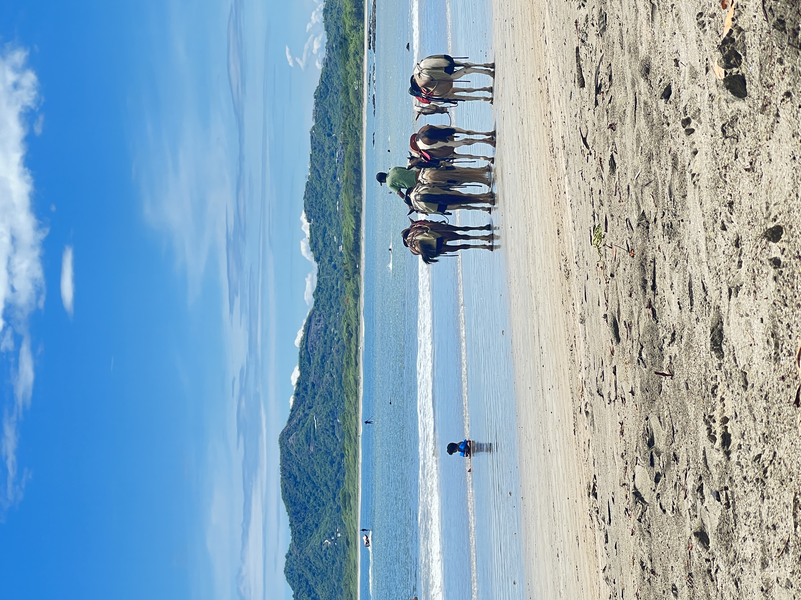
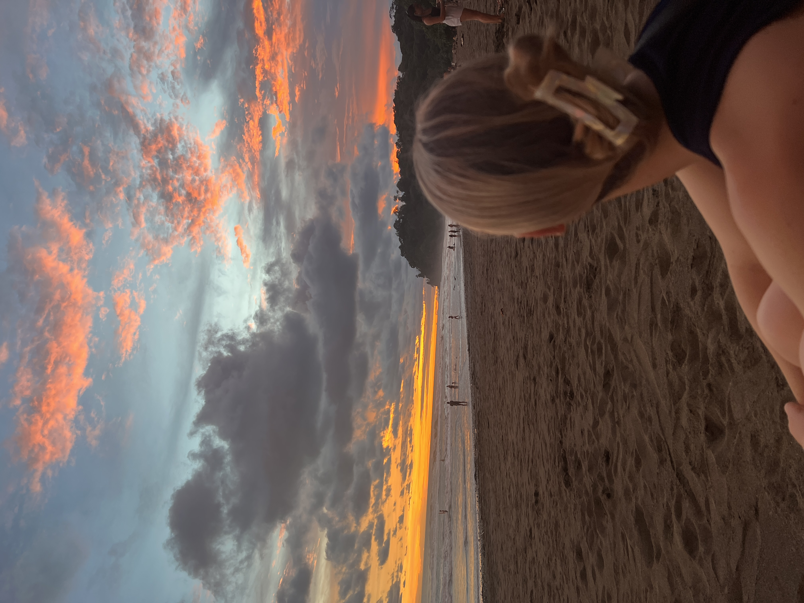
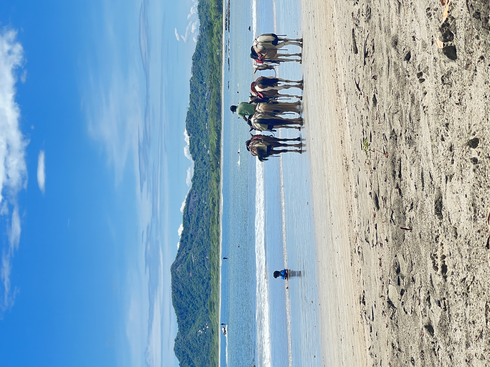
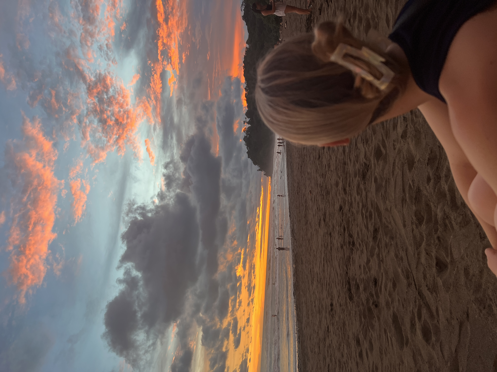
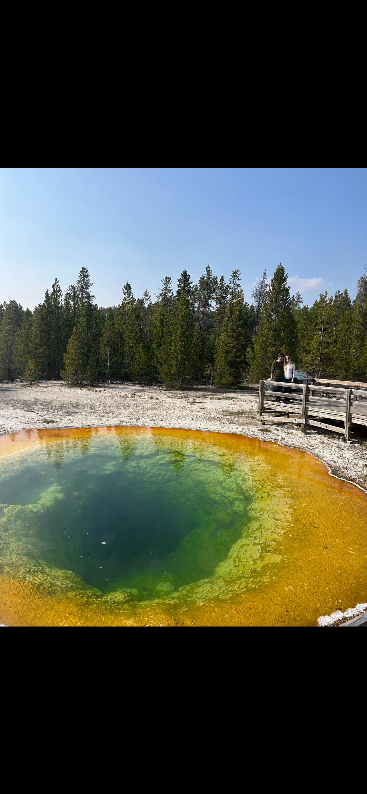
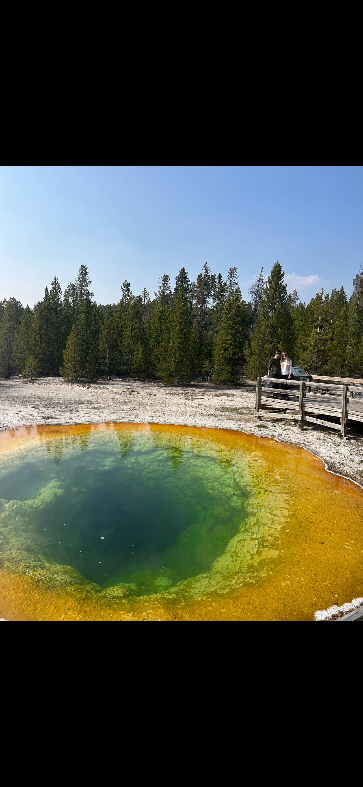
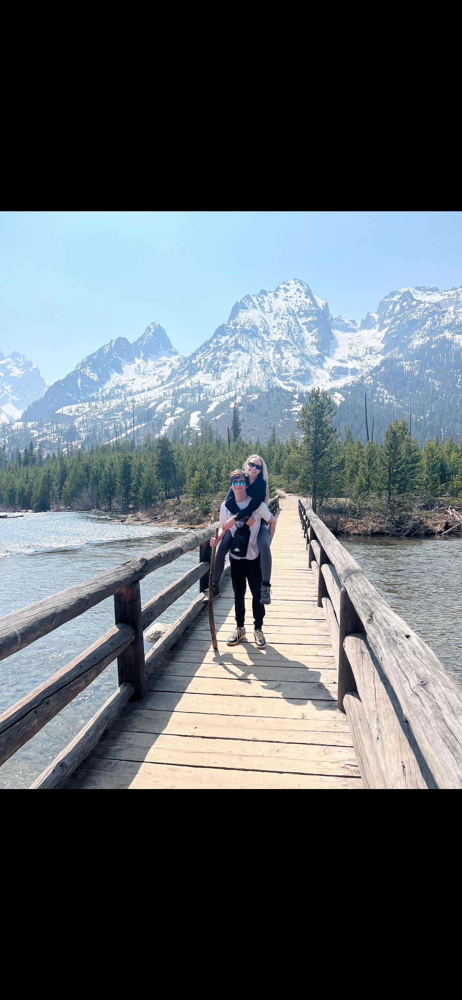
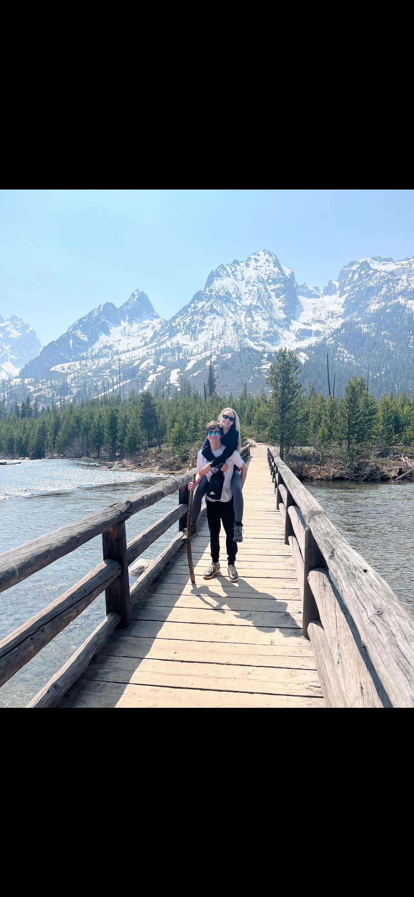
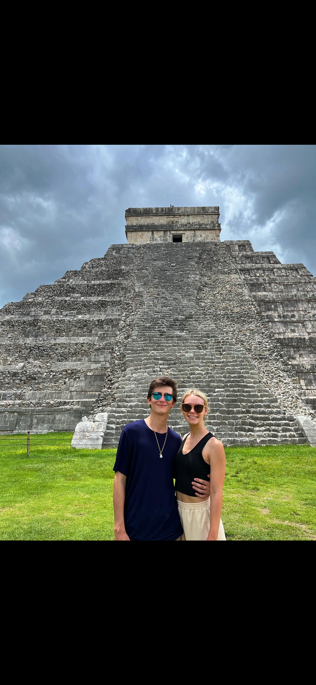
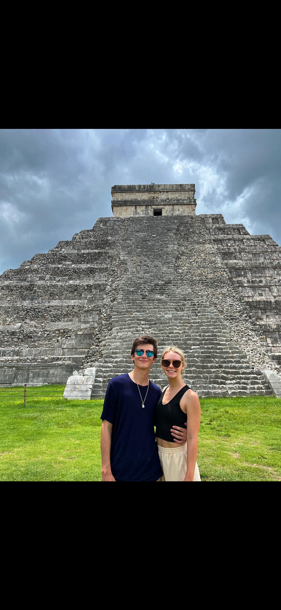

Destinations + Tips
Explore My Travels:
Puerto Rico was my most recent trip and something I won't forget for a long time. This was a surprisingly cheap vacation and would've been a lot cheaper if we didn't miss our flight. Missing our flight was honestly great because we had 2 extre days to do things. Our AirBnb for the last 2 days only cost us $20 each and was very very nice, hot water, close to gas station and grocery stores.
There were four of us, me, my girlfriend, her brother, and his girlfirned. We have had many vacations together and we have the same adventure mindset. We stayed in Levittown which is 30-45 minutes away from San Juan, and San Juan is a disaster when it comes to tourists. Each of us spent $250 each for the AirBnB. Our rental car was not very expensive at all from what I remember but we spent around $200 the whole week on groceries and energy drinks. This is a great budget trip that is not only beautiful and has great food but also holds a very rich history. I loved learning more about Roberto Clemente as I am a big baseball guy. The sea turtles were sick, but for the love of god don't touch the turtles.


Costa Rica
Staying in Costa Rica for 2 weeks was something I will never forget. This trip was a Christmas gift from my girlfriend. She told me it was a going to be a trip but I had no idea where we were going to. The plane ride was only about 5 1/2 hours and costed around $350 for each ticket, we went during the rainy season so almost everything was cheaper. The prices of the AirBnb's were dirt cheap, around $50-$100, this made things a lot easier. Just make sure your place has hot water...
We stayed in La Fortuna for 5 days, Uvita for 4, and Tamarindo for 5. The drive between each of these towns are about 4-5 hours, renting a car in Costa Rica is a must if you're looking to visit multiple towns. My girlfriend is a very skilled travel pl
 




Yellowstone
Staying in Yellowstone for a week was one of the most memorable things I have done. My girlfriend and I drove all the way from Indiana to Yellowstone and that took 27 hours, $300 in gas, and a lot of podcasts listend to. The plane tickets were around $700 each so we decided to savve the money and just drive saving us $1,200!! We went during the middle of May so it wasn't competely packed but it was still busy with tourism. Most people go during the summer because no one wants to battle the frigid temperatures in Yellowstone during the winter. Going in May might ideal for you, animals are starting to come out of hibernation, it's cold some days and hot the others, and endless amount of the things to go and see. If you are not looking to walk a whole lot expect the opposite, there are some easier trails to take but the longer trails have more wildlife and views. Also, don't forget your bear spray.
 

 

Playa Del Carmen, Mexico
Embarking on a mesmerizing week in Playa del Carmen, Mexico, was an unforgettable experience. The sun-kissed beaches offered tranquility and awe-inspiring vistas, a perfect retreat to unwind and immerse in the beauty of the Caribbean coast. The highlight was witnessing one of the world's wonders, a moment etched in memory forever. Exploring the mystical ruins of Chichen Itza left me in absolute wonder and admiration for its rich history and grandeur. This journey was a perfect blend of coastal serenity and historical fascination, leaving me with cherished memories of Mexico's captivating beauty and cultural heritage.


 

Colorado
Colorado holds a special place in my heart; I can't help but gush about the breathtaking beauty and endless adventures it offers. I've been fortunate to visit three times, each trip adding layers to my admiration for this stunning state. What made it even more unforgettable was having my girlfriend's brother residing there for a year, generously offering us a place to stay. From the majestic peaks of the Rockies to the vibrant city life of Denver, every moment spent there felt like a treasure trove of experiences. The outdoor escapades, the warmth of the locals, and the sheer diversity of landscapes made each visit uniquely memorable. Colorado isn't just a destination; it's a kaleidoscope of memories and a place that feels like a second home to me.


Hawaii is a paradise that holds a special chapter in my life thanks to my girlfriend's three-month stint living there. Being able to join her for a week in that tropical haven was an experience that I'll cherish forever. From the moment I landed, the vibrant culture and stunning landscapes captivated me. Every day was a new adventure, whether it was exploring the lush rainforests, soaking up the sun on breathtaking beaches, or immersing ourselves in the local traditions and cuisine. The bond we shared during that week was unparalleled, filled with laughter, exploration, and the sheer joy of being in such a magical place together. Hawaii became more than just a destination; it was a backdrop to some of the most incredible memories and moments of pure happiness.


Contact
Get in touch with me: